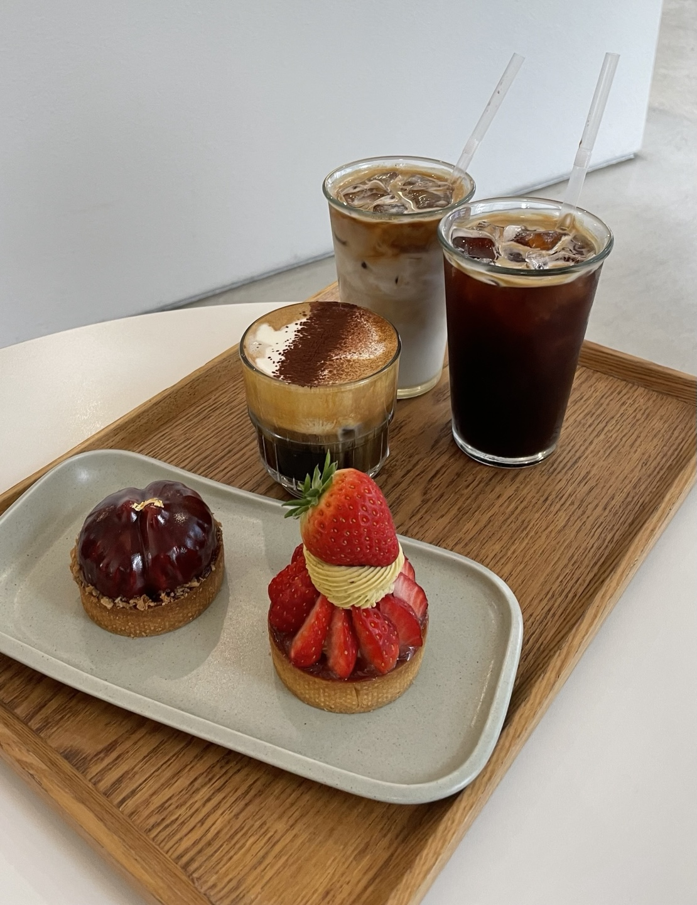

소신
[대전]
쁘띠가또 맛집, 파티셰리 소신
소신은 충남대학교 앞 궁동에 위치한 카페입니다.
통유리로 되어있어 개방감이 좋고, 깔끔한 화이트와 우드톤의 조화로
편안하고 깔끔한 느낌을 줍니다. 다양하고 수준높은 쁘띠갸또를 판매
하고 있습니다. 쁘띠갸또에 관심이 많으신 분도, 뭔지는 모르지만
경험해보고 싶다 하는 분들에게도 추천합니다!
소신은 충남대학교 앞 궁동에 위치한 카페입니다.
통유리로 되어있어 개방감이 좋고, 깔끔한 화이트와 우드톤의 조화로
편안하고 깔끔한 느낌을 줍니다. 다양하고 수준높은 쁘띠갸또를 판매
하고 있습니다. 쁘띠갸또에 관심이 많으신 분도, 뭔지는 모르지만
경험해보고 싶다 하는 분들에게도 추천합니다!